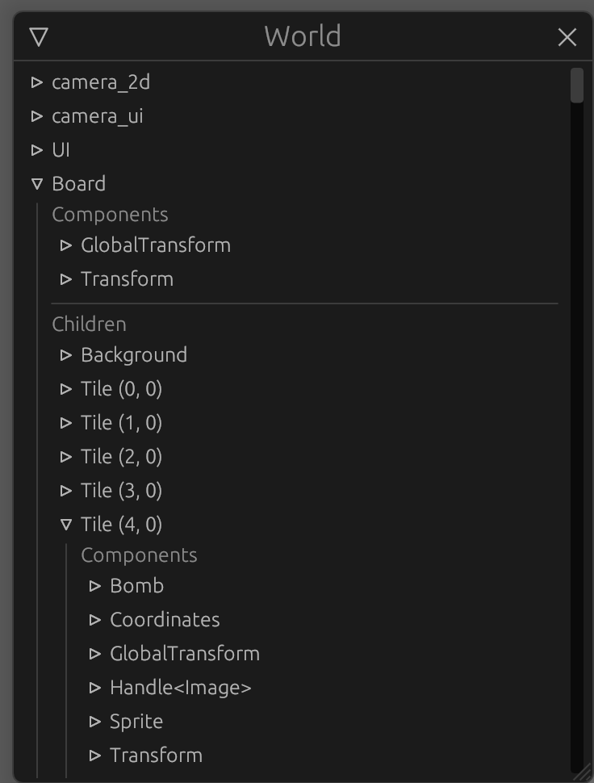
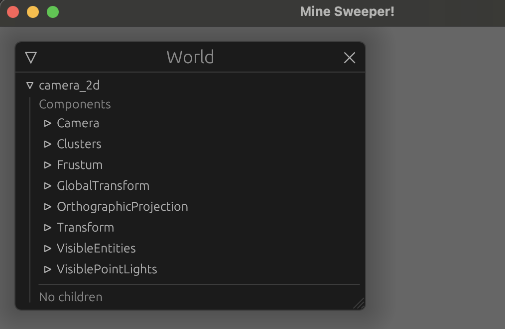

Set Up
One of the purposes of this tutorial is to create a generic plugin that can be embedded in any app. To do this we will initialize two nested cargo projects.
Cargo setup
The main binary app:
cargo init --bin . --name minesweeper-tutorial
And the board plugin:
cargo init --lib board_plugin
Your directory should look like this:
├── Cargo.toml
├── board_plugin
│ ├── Cargo.toml
│ └── src
│ └── lib.rs
└── src
└── main.rs
Board plugin config
Cargo.toml
Add the following elements to the board_plugin/Cargo.toml file:
[features]
default = []
debug = ["colored", "bevy-inspector-egui"]
[dependencies]
# Engine
bevy = "0.6"
# Serialization
serde = "1.0"
# Random
rand = "0.8"
# Console Debug
colored = { version = "2.0", optional = true }
# Hierarchy inspector debug
bevy-inspector-egui = { version = "0.8", optional = true }
- bevy is the main engine dependency
- colored will be used to print the board in the console in debug mode
- bevy-inspector-egui so we can get the inspector compatibility for our components.
Inspector GUI at the end of the tutorial:

We activate the debug crates through a debug feature gate.
lib.rs
Remove the generated code and create the plugin struct
#![allow(unused)] fn main() { // board_plugin/src/lib.rs pub struct BoardPlugin; }
App config
Cargo.toml
Add the following elements to the main src/Cargo.toml file:
[features]
default = []
debug = ["board_plugin/debug", "bevy-inspector-egui"]
[dependencies]
bevy = "0.6"
board_plugin = { path = "board_plugin" }
# Hierarchy inspector debug
bevy-inspector-egui = { version = "0.8", optional = true }
[workspace]
members = [
"board_plugin"
]
We use our lib as a dependency and add it to our workspace.
main.rs
Add the following to the src/main.rs file:
use bevy::prelude::*; #[cfg(feature = "debug")] use bevy_inspector_egui::WorldInspectorPlugin; fn main() { let mut app = App::new(); // Window setup app.insert_resource(WindowDescriptor { title: "Mine Sweeper!".to_string(), width: 700., height: 800., ..Default::default() }) // Bevy default plugins .add_plugins(DefaultPlugins); #[cfg(feature = "debug")] // Debug hierarchy inspector app.add_plugin(WorldInspectorPlugin::new()); // Startup system (cameras) app.add_startup_system(camera_setup); // Run the app app.run(); } fn camera_setup(mut commands: Commands) { // 2D orthographic camera commands.spawn_bundle(OrthographicCameraBundle::new_2d()); }
Let's break it down:
-
The bevy
Appis the builder for all our game logic, allowing to register systems, resources and plugins -
A bevy
Pluginis a container of app building logic, a modular way to add systems and resources to the application.For example, the
WorldInspectorPluginwill register every system and resource required to display the GUI inspector. -
Bevy's
DefaultPluginsis a collection of basic plugins providing basic engine features, like input handling, windows, transform, rendering..
We add one resource,WindowDescriptorto customize our window.
How does adding resources makes anything ? They are just data !
The resources are indeed just data, no logic. The DefaultPlugins register systems responsible for drawing the window using the WindowDescriptor resource as configuration.
The resource is optional, because the systems with simply use default values if you don't set anything.
Allowing extern customization through resources is what we will make with our BoardPlugin.
The startup system
We also register a Startup System: camera_setup
A classic system is run every frame, with optional run criteria like Stages or FixedTimeSteps. A Startup System is run only once, at the start.
We register systems this way:
#![allow(unused)] fn main() { app.add_system(my_function) }
This is the camera setup function:
#![allow(unused)] fn main() { fn camera_setup(mut commands: Commands) { // 2D orthographic camera commands.spawn_bundle(OrthographicCameraBundle::new_2d()); } }
the Commands argument is the main ECS tool for every system that requires world editing, it allows to spawn and despawn entities, add components to entities, insert and remove resources, etc.
So does every system have only one argument?
Not at all, and the Commands argument is optional. Systems can have as many arguments as you want, but only ECS valid ones like:
- Commands as we just saw (
Commands) - Resources wrapped in
Res<>orResMut<>(can be assets, window or any inserted resource) - Component Queries (
Query<>) - Event items (
EventReader<>andEventWriter<>) - etc.
Bevy will automatically handle everything for you and provide your systems with the correct arguments.
The systems "spawns a bundle", what does that mean?
We explained in the intro that in our in game world there are Entities with Components attached.
To spawn an entity and add components we can do this:
#![allow(unused)] fn main() { fn my_system(mut commands: Commands) { // This spawns an entity and returns a builder let entity = commands.spawn(); // We can add components to the entity entity .insert(MyComponent {}) .insert(MyOtherComponent {}); } }
But for complex objects we use Bundles which contains a collection of components to add.
This way we can do:
#![allow(unused)] fn main() { fn my_system(mut commands: Commands) { let entity = commands.spawn(); entity.insert_bundle(MyComponentBundle::new()); } }
or directly:
#![allow(unused)] fn main() { fn my_system(mut commands: Commands) { // This spawns an entity with all components in the bundle commands.spawn_bundle(MyComponentBundle::new()); } }
In our system we spawn a camera entity with all the associated components to have a 2D orthographic camera.
Run
You can now run the app using
cargo run: Giving you an empty windowcargo run --features debug:

Showing the debug inspector, we can see our 2D camera entity, and the components inserted via the bundle.
Author: Félix de Maneville Follow me on Twitter